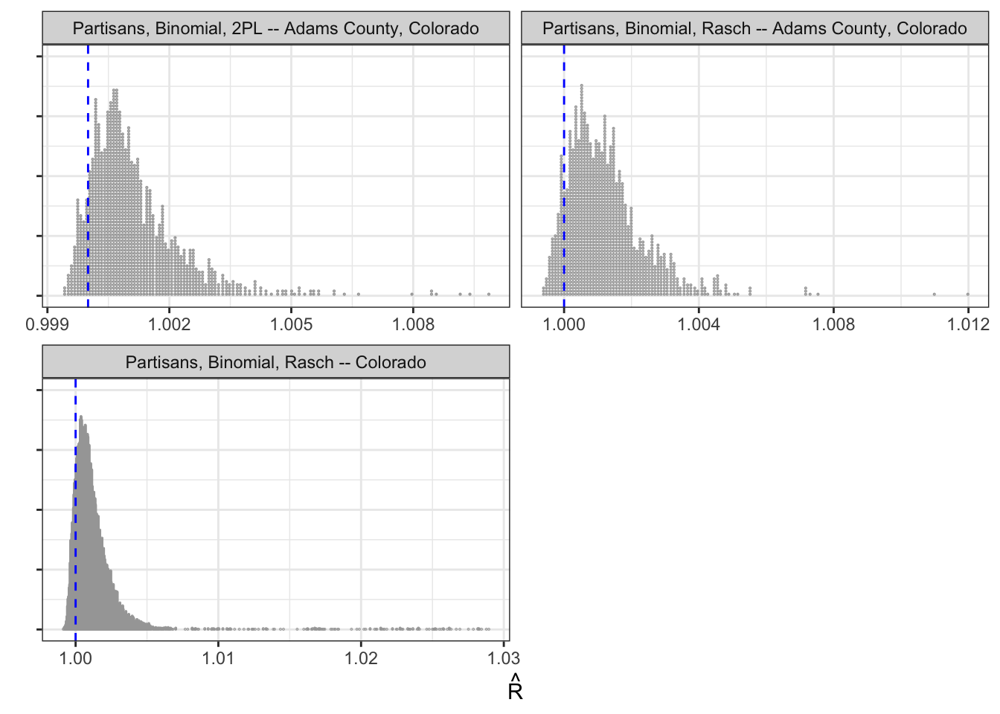
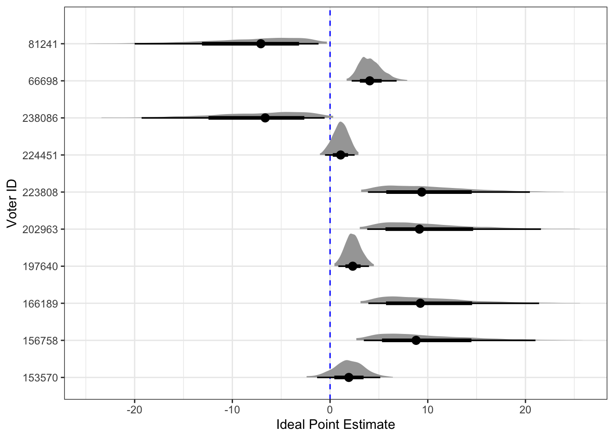

bf(choice_rep ~ county_name + (1 | office/district) + (1 | cvr_id))Ideal Point Estimation of Voters Using Cast Vote Records
Binomial Option
I subset the data very specifically to make the model more sensible, just to start. In this section, all data has been restricted as follows:
Remove all nonpartisan races
Remove all uncontested races
Remove all races where a voter could select more than one candidates
Only use the state of Colorado
Randomly select 25,000 voters
In addition, I set aside the issue of multiple candidates and focus on a simpler binomial variable. I create a variable choice_rep that is just a binary 1/0 for if the voter has selected the Republican candidate in the race. This choice means that all ideal points on the right side of the scale will indicate greater likelihood to select the Republican candidate (and thus naturally map to the left/right US political party scale).
Rasch Model
I start by fitting a simple Rasch model. First, I do this for a random county in Colorado, Adams County, then for the whole state. I estimate the following Bernoulli model using brms . All models are run for 4 chains, with 1000 warmup iterations and then 1000 sampling iterations. Trace plots are too numerous to display, so Figure 1 instead plots the \(\hat{R}\) value for every parameter in the model. As can be seen, all \(\hat{R}\) values are extremely close to 1, indicating the model has converged well. This is true for all the model specifications in this section (also shown in Figure 1).

Rasch models treat each race as equally important in determining the ideal point of a voter, so really we can only look at those ideal points. I randomly select 10 voters and plot their estimated ideal points in Figure 2.

2PL Model, Constrained Discrimination
2PL Model, Unconstrained Discrimination
Potential Extensions
Scaling latent space together from this data and the DIME scores could be Scaling Data from Multiple Sources by Ted Enamorado 1, Gabriel López-Moctezuma2 and Marc Ratkovic.
Ends Against the Middle: Measuring Latent Traits when Opposites Respond the Same Way for Antithetical Reasons by JBrandon Duck-Mayr 1 and Jacob Montgomery. Different from just including a second dimension to explain responses. But maybe I should just say that we should include additional dimensions.
Nonparametric Ideal-Point Estimation and Inference Alexander Tahk
Nov 11 Update
Warning: Removed 1440 rows containing missing values (`stat_slabinterval()`).
As shown in Figure 3, each office is not very discriminatory. The reason for this is that most people are straight-ticket voters, and so there is mostly no variation among voters. Maybe could focus only on people who actually split a ticket, or perhaps just by including more people in the same we would be able to recover more of an effect here.